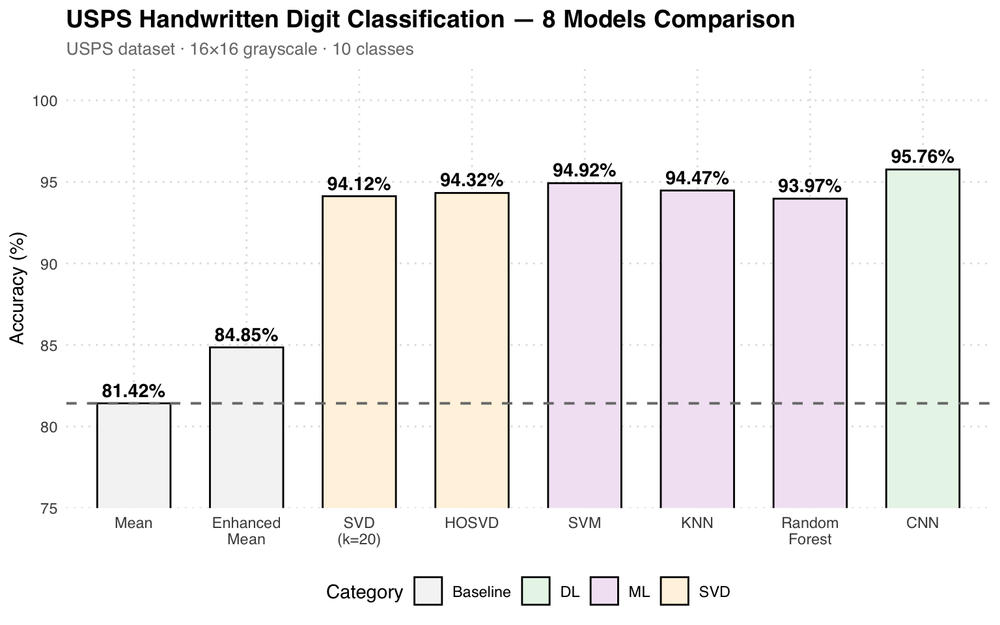
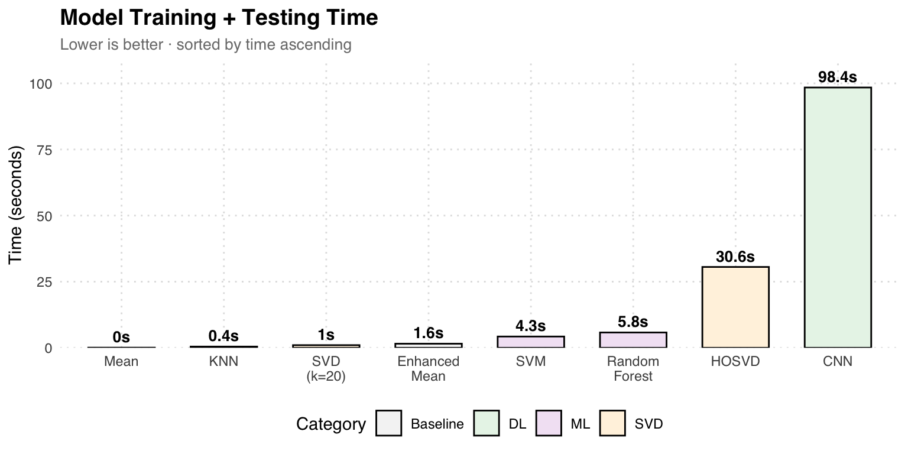

%%{init: {"theme": "base", "themeVariables": {"fontSize": "18px"}, "flowchart": {"padding": 35}}}%%
flowchart TD
A["Load Image 1546×1029×3 "] --> B["Split R, G, B "]
B --> C["np.linalg.svd per channel "]
C --> D["Reconstruct A_k for k = 1..1029 "]
D --> E["Compute MSE, PSNR, 2-norm "]
E --> F["Compare 2-norm vs σ_k+1 "]
style A fill:#E3F2FD,color:#1565C0,stroke:#90CAF9,stroke-width:2px
style B fill:#F5F5F5,color:#424242,stroke:#BDBDBD,stroke-width:2px
style C fill:#FFF3E0,color:#E65100,stroke:#FFCC80,stroke-width:2px
style D fill:#F3E5F5,color:#6A1B9A,stroke:#CE93D8,stroke-width:2px
style E fill:#E3F2FD,color:#1565C0,stroke:#90CAF9,stroke-width:2px
style F fill:#E8F5E9,color:#2E7D32,stroke:#A5D6A7,stroke-width:2px
Data Analysis Mathematics
數據分析數學 · 國立中興大學 資料科學與資訊計算研究所
Assignments / 作業
HW1 — SVD Image Compression / SVD 影像壓縮
Topic / 主題： 以 SVD 分解驗證 Eckart-Young 定理：\(\|A - A_k\|_2 = \sigma_{k+1}\)
Dataset： 彩色照片 1546×1029 pixels（RGB 三通道）
Pipeline Overview / 整體流程
方法說明： 以照片作為矩陣 A，對 RGB 三通道分別做 SVD。刻意不使用 np.linalg.norm(ord=2)（因為其內部實作就是 SVD，會造成循環論證），改用 Monte Carlo 隨機向量法 近似 operator 2-norm，再與 σ_{k+1} 比較趨勢。
Key Formulas / 關鍵公式
SVD 分解：
\[A = U \Sigma V^T, \quad A_k = \sum_{i=1}^{k} \sigma_i u_i v_i^T\]
Eckart-Young 定理：
\[\|A - A_k\|_2 = \sigma_{k+1}\]
Results / 結果
| k | 2-norm (approx) | σ_{k+1} | MSE | PSNR (dB) |
|---|---|---|---|---|
| 1 | 3,310 | 34,072 | 3,363 | 12.95 |
| 10 | 1,556 | 10,116 | 1,403 | 16.77 |
| 50 | 837 | 3,645 | 487 | 21.35 |
| 100 | 577 | 2,108 | 241 | 24.37 |
| 300 | 234 | 699 | 42 | 31.88 |
| 500 | 116 | 340 | 10 | 38.04 |
| 700 | 54 | 172 | 2.2 | 44.70 |
Reconstruction Quality / 重建品質

視覺化： k=1 時幾乎看不出原圖；k=50 開始可辨識主要輪廓；k=300 以上接近原圖。右下方 k=507 時 PSNR 已達 38 dB，肉眼幾乎無法分辨與原圖差異。
MSE / PSNR / 2-norm Analysis

結論： MSE 隨 k 遞減、PSNR 遞增，且 2-norm 與 σ_{k+1} 呈現相同遞減趨勢，間接驗證 Eckart-Young 定理。Monte Carlo 法因隨機抽樣會低估真實 2-norm，但趨勢一致。
HW2 — Handwritten Digit Recognition / 手寫數字辨識
Topic / 主題： 比較 8 種分類方法在 USPS 手寫數字資料集上的表現
Dataset： USPS 手寫數字（16×16 灰階，0-9 共 10 類）
Dataset Samples / 資料集樣本

資料特徵： 每張圖片僅 16×16 = 256 pixels，解析度極低但保留了數字的基本結構。這使得矩陣分解方法（SVD / HOSVD）能夠有效捕捉低維特徵。
Methods / 方法總覽
| Category | Method | Description |
|---|---|---|
| Baseline | Mean Method | 計算每類平均影像，以歐氏距離分類 |
| Enhanced Mean | 迭代修正，考慮類間混淆模式 | |
| 矩陣分解 | SVD (k=20) | 建立每類 SVD 基底，投影殘差分類 |
| HOSVD | Tucker 分解 (tensorly)，rank (10,10,20) | |
| 傳統 ML | SVM | sklearn SVC |
| KNN | sklearn KNeighborsClassifier | |
| Random Forest | sklearn RandomForestClassifier | |
| 深度學習 | CNN (PyTorch) | Conv2D → MaxPool → Dense，50 epochs |
Accuracy Comparison / 準確率比較

結果分析： Mean 方法僅 81.42% 作為 baseline。SVD (k=20) 跳升至 94.12%，說明低秩近似能有效捕捉數字結構。傳統 ML（SVM 94.92%）與 SVD 系列表現接近。CNN 以 95.76% 勝出，但訓練時間為 98 秒，遠高於 KNN 的 0.45 秒。
Training Time Comparison / 訓練時間比較

速度 vs 精度： KNN 以 0.45 秒達到 94.47%，是性價比最高的模型。CNN 雖然最準（95.76%）但耗時 98 秒。HOSVD（Tucker 分解）精度與 SVD 接近但慢了 30 倍。
SVD Confusion Matrix

混淆矩陣分析： SVD 方法對 0、1 的辨識最佳（353/264 正確），對 3、7 的混淆較高（3→5 有 13 筆誤判）。整體 94.12% 的準確率在無需訓練的矩陣分解方法中表現優異。
Misclassified Samples / 誤判樣本

誤判分析： 這些樣本即使是人眼也不容易辨識。例如 True: 6 被判成 2（筆畫圓弧相似）、True: 3 被判成 8（形狀接近）。低解析度 16×16 下，部分數字的結構差異極小。
Real Handwriting Test / 手寫實測


外部驗證： 用手機拍攝手寫數字照片測試所有模型。CNN 達到 100% 完美辨識，Random Forest 95%，而 Enhanced Mean 僅 56%。這驗證了深度學習對真實世界手寫變異的泛化能力最強。